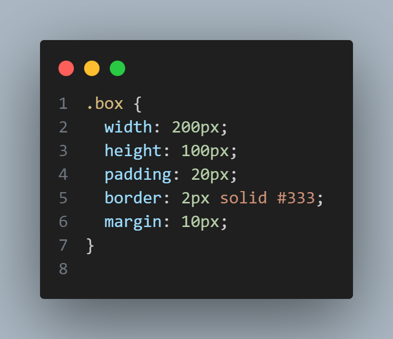
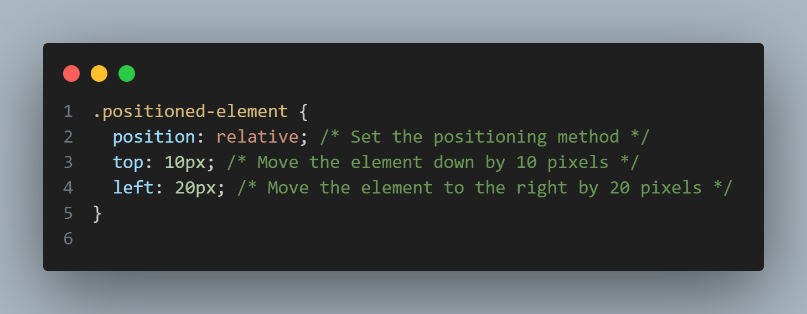

CSS Tutorial
- Intro
➤The introductory part of a CSS tutorial or documentation may provide an overview of what CSS (Cascading Style Sheets) is and its role in web development. It could cover its purpose, syntax, and how it works in conjunction with HTML to style web pages.
- Text
➤In CSS, styling text involves controlling the appearance of text content on a webpage. This includes properties like font-family, font-size, font-weight, color, text-align, and text-decoration.
- Background
➤ The background-color, background-image, background-position, and background-size properties control the background appearance.
CSS Advanced
- Box-model
➤The box model consists of width, height, padding, border, and margin properties to control the layout of elements.
 - Properties of box model
➤ Specific properties like padding-top, padding-right, padding-bottom, padding-left, border-width, border-style, and border-color can be individually adjusted.
- Position
➤The position property and related properties like top, right, bottom, and left control the positioning of elements.

CSS Responsive
- Pseudoselectors
➤Pseudo-selectors like :hover and :nth-child allow the selection of elements based on their state or position.
- Media
➤Media queries enable responsive design by applying styles based on device characteristics.
CSS Animations
- Display
➤The display property controls how an element is displayed on the webpage.
- 2D
➤CSS supports 2D animations using keyframes, transitions, and the animation property.
- Examples
➤Examples in CSS documentation illustrate how to use various properties and concepts to achieve specific styling effects.
CSS Resources
- YoutubeChannels ➤FreeCodeCamp
- Courses&Articles ➤FreeCodeCamp
- Projects ➤GeeksForGeeks